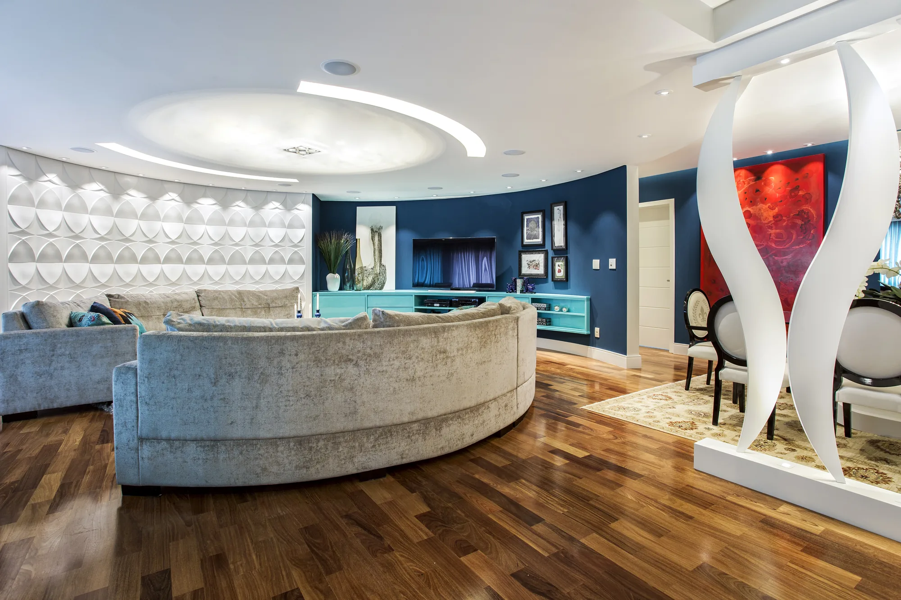
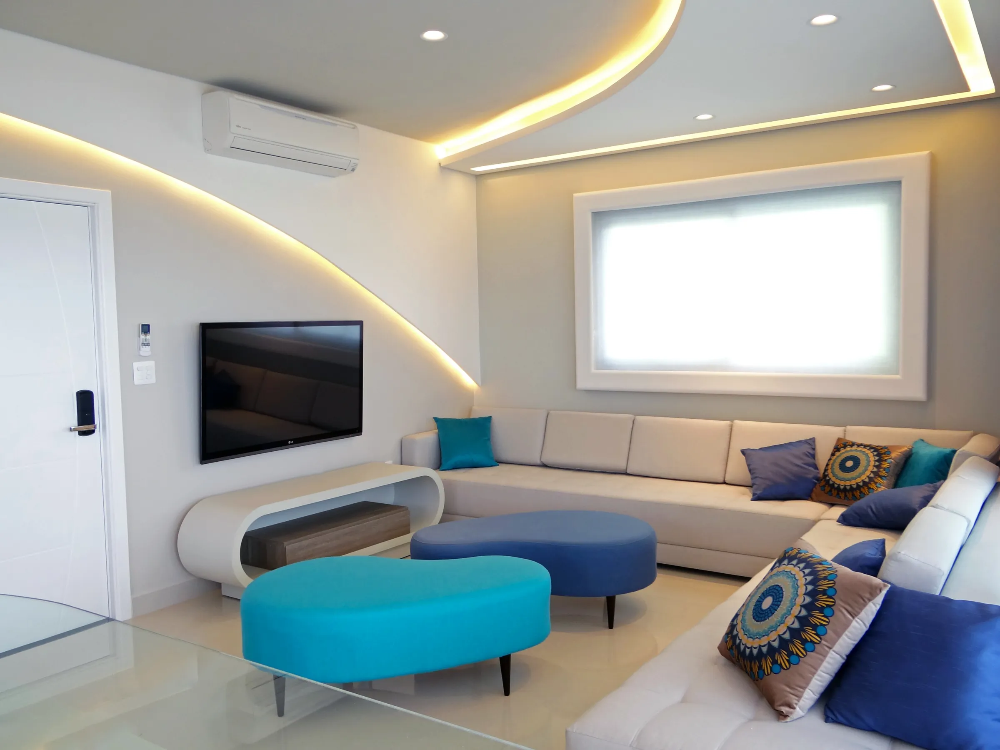

Forros em gesso e drywall
Forro liso, rebaixado ou com iluminação integrada, executado com alinhamento perfeito. A base do acabamento de alto padrão.

Sancas, molduras, colunas e nichos com acabamento impecável para obras que exigem o padrão que arquitetos e clientes de alto padrão esperam.
Conte sobre seu projeto e receba um orçamento personalizado em até 2 dias
Um ambiente de alto padrão se revela no acabamento. E o gesso é onde esse acabamento acontece.
Uma sanca mal executada, um forro sem alinhamento ou uma moldura fora do esquadro comprometem todo o projeto, por mais bonito que seja o resto.
Para arquitetos e clientes exigentes, gesso não é só cobrir o teto. É a diferença entre um ambiente bom e um ambiente impecável.
Forro liso, rebaixado ou com iluminação integrada, executado com alinhamento perfeito. A base do acabamento de alto padrão.
Sancas, molduras em gesso e EPS que dão sofisticação e arremate ao ambiente. Sob medida, com encaixe milimétrico.
Paredes e tetos com superfície uniforme e sem imperfeições, prontos para receber a pintura de acabamento fino.
Divisórias que organizam o espaço com leveza e acabamento limpo, integradas ao restante do projeto sem quebra visual.
Colunas, nichos e peças sob medida que transformam o ambiente. Aquilo que faz perguntarem: foi de gesso mesmo?
Conforto sonoro integrado ao acabamento, especificado para o isolamento que o ambiente pede, sem abrir mão do visual.

Gesso não é só acabamento. É a forma final de tudo que o projeto promete.
Tem um projeto que pede acabamento impecável? Vamos tirar do papel
Solicitar OrçamentoA Gesso JW é especializada em gesso e drywall de alto padrão, do acabamento liso ao projeto especial mais elaborado. São 15 anos atendendo arquitetos, construtoras, incorporadoras e clientes finais que buscam resultado impecável em cada detalhe. Com equipe própria e olhar para o acabamento, entregamos o padrão que obras exigentes precisam.

Projetos executados em parceria com escritórios de arquitetura e construtoras em São Paulo e região. Clique para ver todas as fotos de cada obra.

"Em obras comerciais, prazo é fundamental. A Gesso JW sempre atendeu nossas demandas com agilidade, organização e excelente qualidade de execução."Artefacto — Loja
Sim. Além de forros e divisórias, criamos sancas, colunas, nichos e peças sob medida em gesso. Se você imaginou algo diferente, desenvolvemos e executamos.
Não. Se você já tem o projeto do arquiteto, executamos com fidelidade ao acabamento previsto. Se ainda não tem, ajudamos a desenvolver a solução ideal para o ambiente.
Sim, é a nossa especialidade. São 15 anos entregando gesso com o nível de acabamento que apartamentos, casas de condomínio e projetos de arquitetura exigem.
Em até 2 dias úteis após entender o escopo do seu projeto, entregamos um orçamento personalizado e detalhado.
Atuamos na capital de São Paulo, com foco nas zonas Sul e Oeste, regiões de condomínios de alto padrão, Santo André e São Caetano. Fale com a gente para confirmar seu endereço.
Sim. Executamos o projeto especificado com o padrão de acabamento definido, funcionando como o braço executor que o arquiteto precisa para entregar o resultado.
Conte sobre seu ambiente e receba um orçamento personalizado em até 2 dias, com quem entende de gesso de alto padrão.
Envie os detalhes pelo WhatsApp: tipo de ambiente, referências e nível de acabamento desejado.
Avaliamos o projeto (ou ajudamos a criar) com foco no acabamento que o ambiente exige.
Você recebe uma proposta detalhada, à altura do padrão que busca.